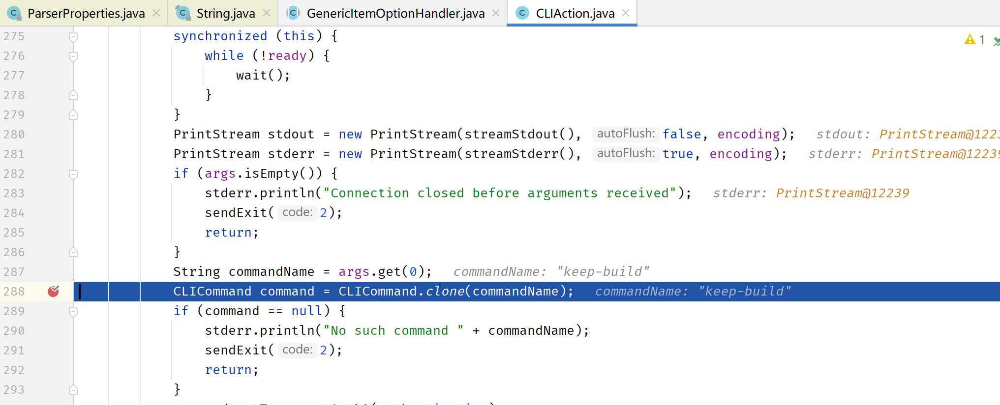
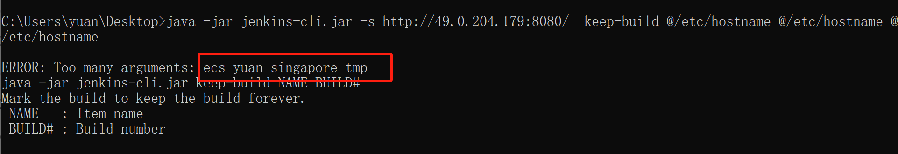
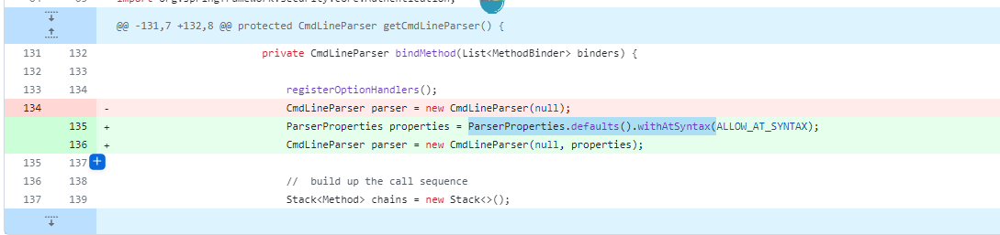

一、组件简介
Jenkins是一个开源的自动化服务器，用于实现持续集成和持续交付（CI/CD）。它提供了一个可扩展的平台，用于构建、测试和部署软件项目。
Jenkins的主要功能包括：
- 自动化构建：Jenkins可以根据预定义的构建脚本或配置文件自动构建项目。它支持各种编程语言和构建工具，如Java、Python、Maven和Gradle。
- 持续集成：Jenkins可以与版本控制系统（如Git、Subversion）集成，以便在代码提交时自动触发构建和测试过程。它可以检测代码变更并执行相应的构建任务。
- 测试和报告：Jenkins可以与各种测试框架和工具集成，如JUnit、Selenium和JMeter。它可以自动运行测试套件，并生成测试报告和覆盖率报告。
- 部署和交付：Jenkins可以与部署工具和云平台集成，如Docker、Kubernetes和AWS。它可以自动化部署应用程序到不同的环境，并支持持续交付流程。
- 插件生态系统：Jenkins拥有一个丰富的插件生态系统，提供了各种功能扩展和集成选项。用户可以根据自己的需求选择和安装适合的插件。
Jenkins的灵活性和可扩展性使其成为持续集成和持续交付的首选工具之一。它被广泛应用于软件开发和DevOps团队中，帮助实现自动化构建、测试和部署的流程，提高软件交付的质量和效率。
二、漏洞详情
1. 介绍
Jenkins 2.441 and earlier, LTS 2.426.2 and earlier does not disable a feature of its CLI command parser that replaces an ‘@’ character followed by a file path in an argument with the file’s contents, allowing unauthenticated attackers to read arbitrary files on the Jenkins controller file system.
Jenkins 2.441 及更早版本、LTS 2.426.2 及更早版本不会禁用其 CLI 命令解析器的一项功能，可以将@参数中后跟文件路径的字符替换为文件内容 ( expandAtFiles)，从而允许未经身份验证的攻击者读取Jenkins 控制器文件系统。
2. 影响范围
<=Jenkins 2.441
<=Jenkins LTS 2.426.2
3.漏洞分析
根据漏洞描述，是由于@会替换成文件内容，所以导致的信息泄露，根据官网说明和分析，问题属于SECURITY-3314，commit应该是：https://github.com/jenkinsci/jenkins/commit/554f03782057c499c49bbb06575f0d28b5200edb
直接将命令修改下就可以利用了，poc：java -jar jenkins-cli.jar -s http://x.x.x.x:8080/ help @/etc/passwd，有的文件不需要认证就可以读取，有的文件行数比较多的需要认证才能读取
3.1环境搭建
先访问github搭建2.441的环境
https://github.com/jenkinsci/jenkins/archive/refs/tags/jenkins-2.441.zip 源码
https://github.com/jenkinsci/jenkins/releases/download/jenkins-2.441/jenkins.war 部署运行的，vps上通过 java -jar jenkins.war --httpPort=8080执行
jenkins-cli是jenins的管理工具，可以从搭建好的8080应用上直接下载：wget http://172.16.0.147:8080/jnlpJars/jenkins-cli.jar
使用也比较简单：java -jar jenkins-cli.jar -s http://172.16.0.147:8080/ help
3.2代码分析
将启动参数加入 进行debug：java -agentlib:jdwp=transport=dt_socket,server=y,suspend=n,address=*:5005 -jar jenkins.war。看下代码的底层逻辑。
根据commit下对应的断点，可以看到poc中的@/etc/shadow被当作参数传递到jenkins服务端
继续跟进到org.kohsuke.args4j.CmdLineParser#parseArgument(java.lang.String…)中的expandAtFiles()方法
方法内会判断如果以@开头，且文件存在的话，会读取文件的内容
会导致读取文件内容当作命令的参数赋值给expandedArgs，最终会把部分内容放入到报错信息中，返回给连接者
其中有几种情况
| 是否认证 | 读取文件是单行/多行 | 结果 |
|---|---|---|
| 未认证 | 单行 | 可以读 |
| 未认证 | 多行 | 前3行(help是前2行) |
| 已认证 | 单行 | 可以读 |
| 已认证 | 多行 | 可以读 |
使用help命令，如果未认证且读取的文件是多行的，会把第一、二行内容返回，无需认证
如果执行help未认证且读取单行文件的话，由于参数数量没有问题，所以不会报CmdLineException错，执行到run()时，会由于没有认证而导致报AccessDeniedException错，返回的是通用报错信息，不会返回参数值，因此通过help命令无认证的用户无法读取单行的文件
其他的命令有两类：CLICommand、CLIRegisterer，后续执行command.main逻辑不同

如果是CLICommand类的命令，会先校验权限，如果不是help和whoami，都会执行到checkPermission报AccessDeniedException错
如果是CLIRegisterer类型的（keep-build、restart、shutdown、safe-shutdown、disable-job、enable-job），检查权限是在解析参数之后
因此如果解析参数时报错，就可以获取敏感信息，因此可以通过多个参数来使CLIRegisterer类型的命令在解析参数时报错
如使用keep-build命令可以读取单行文件

也可以读取第三行
使用restart命令读取单行文件
认证之后情况类似
如果命令有1个参数，那么可以通过报错获取文件的第1、2行内容，如果有2个参数，可以获取第1、2、3行的内容，目前CLI的命令应该就是keep-build的参数是2个，所以最多可以读取3行内容
3.3漏洞修复分析
修复是加了ALLOW_AT_SYNTAX，默认为false

解析参数的时候parserProperties.getAtSyntax()返回false，就不会对参数进行解析了
三、排查修复建议
四、可能的挖掘点
SSRF：不可以，@filepath不会解析了，之前的版本可以
如果有admin权限的话，就可以直接执行Script Console，从而执行系统命令，控制服务器
五、总结启发思考（必填）
漏洞挖掘方法，漏洞分析方法，启发等